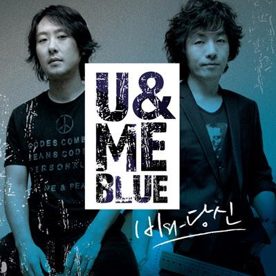
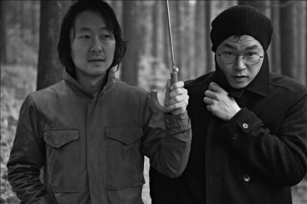

홈
방준석 소개
방준석 활동
솔로 앨범
방준석 주요 활동 및 음악

<비와 당신>의 원작자 버전
<그의 class="description">영화 '라디오 스타'를 통해
널리 알려진 명곡 '비와 당신'의 방준석님 원곡 버전입니다.
그의 깊은 감성을 느낄 수 있습니다.
YouTube에서 보기

<학수고대 했던 날>
방준석님과 백현진님의 프로젝트 밴드 '방백'의 곡입니다.
그들의 독특한 음악적 시너지를 엿볼 수 있습니다.
YouTube에서 보기